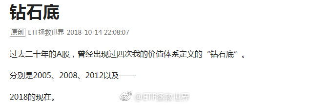
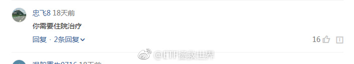
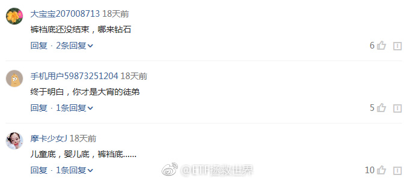

为什么要预测。到底为什么。投资股市真的真的不需要预测涨跌就能挣钱。不要预测，预测就会错。错了就赔钱。好好的建立投资策略和投资体系，然后从股市提款。不要预测！@ETF拯救世界:反转还是反弹，不是猜出来的，是走出来的。观察就行，不要预测。根据我的体系，确认反转还需要有两个条件满足。这两个条件满足了，反转的或然率超过80%。走着看呗。踏踏实实的。
回复@pinjia媛媛:我也不知道。我只是按照体系和策略操作和配置仓位。我预测不了未来，也不会尝试预测。//@pinjia媛媛:回复@pinjia媛媛:那么多看中期反转的声音，小白就很慌。不知道钻石底给不给足够的机会。拜托E大能解惑。感谢！@ETF拯救世界@ETF拯救世界:踏踏实实的。记住，你来股市不是为了解套的
回复@sunny_华:写的真好。是不是抄的。谁写的我要粉他//@sunny_华:感谢益达，同时感谢2018的自己。感谢那个在哀声一片，惨不忍睹的修罗战场上缓缓站起，抽出利刃，一步步走向敌人的自己@ETF拯救世界:踏踏实实的。记住，你来股市不是为了解套的
//@王志安: 公布的视频太短了，既然已经恢复了sd卡，为什么不能多公布一些内容呢？最关键的是司机撞桥栏和之后的身体姿势和神态，这能帮助分析出，变道撞桥坠江到底是司机的失误还是因为发怒之后的有意为之。目前这个视频并不支持调查结论。我认为这个公布不合格。---:抱歉，作者已设置仅展示半年内微博，此微博已不可见。
两个人都有问题。情绪完全控制不住。以后打司机的行为能不能以危害公共安全罪判五年罚50万？并且大力宣传，看谁还敢。司机方面，我就不说了，不知道最后的方向盘是怎么回事……最无辜的，是这一车乘客。---:抱歉，作者已设置仅展示半年内微博，此微博已不可见。
回复@OO大月半:这是没办法的。这就是所谓右侧的弊端。趋势明确反转必然已经是有一段涨幅了。左侧在下跌中买入，会套。右侧在上涨中买入，会比最低点高。没有任何方法能保证能买在最低点。没有任何方法，没有。//@OO大月半:满足反转条件的时候，估计已经从底部上来很多了吧@ETF拯救世界:反转还是反弹，不是猜出来的，是走出来的。观察就行，不要预测。根据我的体系，确认反转还需要有两个条件满足。这两个条件满足了，反转的或然率超过80%。走着看呗。踏踏实实的。
回复@黄连树:不。你看头条的人虽然喷，但是并不会很恶毒，甚至有点可爱。球球上有些人写出的文字，其恶毒程度，已经不仅是侮辱人格。甚至有人会组队来喷。那是一个江湖，早早归隐才是王道。@ETF拯救世界:三张图告诉你为什么我看到头条的评论一点都不生气，还感觉很欢乐。 
涨了，赚钱了，不用激动，也没理由激动。为什么，因为你买入的时候就应该知道这是97.1%会发生的。这么大概率的事情发生了，你激动什么？每天你看见太阳升起来会激动吗。跌了，浮亏了，同样不用担心。为什么。因为你知道自己买的是便宜的，不会死的好东西。跌就跌呗。97.1%概率以后肯定挣钱啊。还不趁着越来越便宜买买买。综上。佛系买指数，波澜不惊，笑看风云。
回复@站在空气稀薄地带:哪有的事儿呢//@站在空气稀薄地带:说，你是不是提前知道主席召开的会议到行事历了@ETF拯救世界:很多人一定要等到所有事情变好了才开始买很多人设定一个点位跌不到绝不买我只能说远未够班